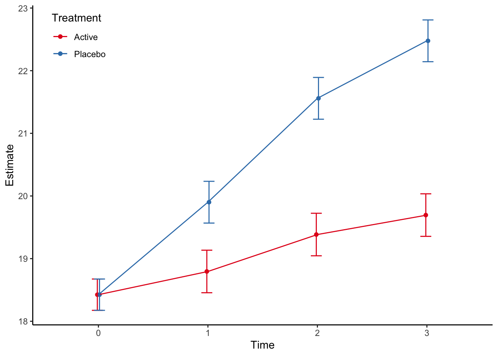

Chapter 3 Continuous endpoints
3.1 Single follow-up
When the outcome consists of a single follow-up assessment of the continuous endpoint, the main method I use is Analysis of Covariance. According to the EMAs Guideline on adjustment for baseline covariates in clinical trials we should adjust for site in multicentre trial, any stratification factors in the randomisation in addition to pre-specified covariates with evidence of strong or moderate association between the covariate and the primary outcome measure. Usually this also means the baseline observation of the outcome. In our simulated data set this means to adjust for site, contbl and covar variables. In this example we define that the primary outcome is the continuous outcome at time 3.
3.1.1 Stata code
(all strata combined)
Source | SS df MS Number of obs = 98
-------------+---------------------------------- F(6, 91) = 67.55
Model | 454.530038 6 75.7550064 Prob > F = 0.0000
Residual | 102.049964 91 1.12142818 R-squared = 0.8166
-------------+---------------------------------- Adj R-squared = 0.8046
Total | 556.580002 97 5.73793817 Root MSE = 1.059
------------------------------------------------------------------------------
contout | Coefficient Std. err. t P>|t| [95% conf. interval]
-------------+----------------------------------------------------------------
trt |
Active | -2.768593 .2162162 -12.80 0.000 -3.198079 -2.339106
|
site |
2 | .0464146 .3171924 0.15 0.884 -.5836491 .6764783
3 | .194252 .2832692 0.69 0.495 -.3684276 .7569315
4 | .7040756 .3356689 2.10 0.039 .0373106 1.370841
|
covar | .5580744 .0882877 6.32 0.000 .3827017 .7334471
contbl | .3812488 .0813377 4.69 0.000 .2196815 .5428161
_cons | 12.60568 1.165712 10.81 0.000 10.29013 14.92122
------------------------------------------------------------------------------Note that we here looked at the outcome at time 3 as the primary outcome. It does not matter if we use this or the change from baseline to time 3, due to the baseline adjustment:
(all strata combined)
Source | SS df MS Number of obs = 98
-------------+---------------------------------- F(6, 91) = 40.55
Model | 272.859876 6 45.476646 Prob > F = 0.0000
Residual | 102.049964 91 1.12142818 R-squared = 0.7278
-------------+---------------------------------- Adj R-squared = 0.7099
Total | 374.90984 97 3.8650499 Root MSE = 1.059
------------------------------------------------------------------------------
diff | Coefficient Std. err. t P>|t| [95% conf. interval]
-------------+----------------------------------------------------------------
trt |
Active | -2.768593 .2162162 -12.80 0.000 -3.198079 -2.339106
|
site |
2 | .0464146 .3171924 0.15 0.884 -.5836491 .6764783
3 | .194252 .2832692 0.69 0.495 -.3684276 .7569315
4 | .7040756 .3356689 2.10 0.039 .0373106 1.370841
|
covar | .5580744 .0882877 6.32 0.000 .3827017 .7334471
contbl | -.6187512 .0813377 -7.61 0.000 -.7803185 -.4571839
_cons | 12.60568 1.165712 10.81 0.000 10.29013 14.92122
------------------------------------------------------------------------------We see that the only difference is that the baseline parameter estimate shifts with one unit.
3.1.2 R code
rct <- read_dta("stata/rct.dta") %>%
modify_at(c("trt","catout"), haven::as_factor, levels = "labels") %>%
modify_at(c("site","time"), haven::as_factor)
rct %>%
filter(time==3) %>%
lm(contout ~ trt + site + covar + contbl, data=.) %>%
summary
Call:
lm(formula = contout ~ trt + site + covar + contbl, data = .)
Residuals:
Min 1Q Median 3Q Max
-2.35594 -0.68326 0.00278 0.73595 1.98465
Coefficients:
Estimate Std. Error t value Pr(>|t|)
(Intercept) 12.60568 1.16571 10.814 < 2e-16 ***
trtActive -2.76859 0.21622 -12.805 < 2e-16 ***
site2 0.04641 0.31719 0.146 0.8840
site3 0.19425 0.28327 0.686 0.4946
site4 0.70408 0.33567 2.098 0.0387 *
covar 0.55807 0.08829 6.321 9.46e-09 ***
contbl 0.38125 0.08134 4.687 9.68e-06 ***
---
Signif. codes: 0 '***' 0.001 '**' 0.01 '*' 0.05 '.' 0.1 ' ' 1
Residual standard error: 1.059 on 91 degrees of freedom
Multiple R-squared: 0.8166, Adjusted R-squared: 0.8046
F-statistic: 67.55 on 6 and 91 DF, p-value: < 2.2e-16We see that the parameter estimates are identical.
3.1.3 Reporting
According to the CONSORT Statement item 17a: > For each outcome, study results should be reported as a summary of the outcome in each group (for example, the number of participants with or without the event and the denominators, or the mean and standard deviation of measurements), together with the contrast between the groups, known as the effect size.
For the single follow-up we present the mean and standard deviaiton for the outcome in addition to the effect size at follow-up (time 3). There is some coding to get the format right, but the nice thing is that the table could be pasted directly into the article. There are many ways to program this, the below example is one way.
#Two functions to produce the mean (sd) and est (lci to uci) output--------------------
get_meansd <- function(m, s, d=2){
paste(round(m, digits=d)," (",round(s,digits=d),")")
}
get_estci <- function(e, l, u, d=2){
paste(round(e, digits=d), " (", round(l, digits=d), " to ", round(u, digits=d),")")
}
# Compile the summary measures---------------------------------------------------------
single_cont_sum <- rct %>%
group_by(trt) %>%
filter(time==3) %>%
select(contout, trt) %>%
summarise_all(list(~mean(.),~sd(.))) %>%
mutate(txt1=get_meansd(mean,sd)) %>%
select(trt,txt1) %>%
spread(key=trt,value=txt1)
# Compile the estimates --------------------------------------------------------------
single_cont_est <- rct %>%
filter(time==3) %>%
lm(contout ~ trt + site + covar + contbl, data=.) %>%
tidy(conf.int=TRUE) %>%
filter(term=="trtActive") %>%
mutate(txt2=get_estci(estimate,conf.low,conf.high)) %>%
select(term,txt2)
# Combine and produce the table -----------------------------------------------------
single_cont_sum %>%
bind_cols(single_cont_est) %>%
mutate(txt="Outcome at time 3, mean (sd)") %>%
select(txt,Active, Placebo, txt2) %>%
kable(col.names=c("Outcome", "Active", "Placebo", "Effect size with 95% confidence limits"))| Outcome | Active | Placebo | Effect size with 95% confidence limits |
|---|---|---|---|
| Outcome at time 3, mean (sd) | 19.88 ( 2.05 ) | 22.3 ( 2.09 ) | -2.77 ( -3.2 to -2.34 ) |
3.2 Repeated follow-up
When the measurements are repeated, I usually use mixed models to model the data. The challenge with mixed models is that the effect size can be estimated in several ways, depending on the model specification.
3.2.1 Simple model
The simplest model is a model with random intercept and treatment, time and other baseline covariates as fixed effects.
\[ Y_{ij} = \mu_j + A_i + \mu_{trt} + \mu_{strat} + a_1 X_1 + \epsilon_{ij} \]
where \(Y_{ij}\) is the contiuous outcome for individual \(i\) at time \(j\), \(\mu_j\) is the overall mean at time \(j\), \(A_i\) is the random intercept for individual \(i\), \(\mu_{trt}\) is the mean treatment effect, \(\mu_{strat}\) is the mean effect of strata, \(a_1\) is the slope parameter of baseline covariate \(X_1\), and \(\epsilon_{ij}\) is the residual. The expression is sloppy, but should be readable.
In Stata, this model is coded as
(all strata combined)
Performing EM optimization ...
Performing gradient-based optimization:
Iteration 0: Log likelihood = -657.45638
Iteration 1: Log likelihood = -657.45638
Computing standard errors ...
Mixed-effects ML regression Number of obs = 392
Group variable: pid Number of groups = 98
Obs per group:
min = 4
avg = 4.0
max = 4
Wald chi2(8) = 668.05
Log likelihood = -657.45638 Prob > chi2 = 0.0000
------------------------------------------------------------------------------
contout | Coefficient Std. err. z P>|z| [95% conf. interval]
-------------+----------------------------------------------------------------
trt |
Active | -1.429745 .1959578 -7.30 0.000 -1.813815 -1.045675
|
site |
2 | .6526838 .2761648 2.36 0.018 .1114107 1.193957
3 | .5751011 .2484525 2.31 0.021 .0881431 1.062059
4 | .9060635 .2962487 3.06 0.002 .3254268 1.4867
|
time |
1 | .9346939 .1621317 5.77 0.000 .6169216 1.252466
2 | 2.069388 .1621317 12.76 0.000 1.751615 2.38716
3 | 2.689796 .1621317 16.59 0.000 2.372024 3.007568
|
covar | .8633823 .0519317 16.63 0.000 .761598 .9651666
_cons | 14.55194 .3117202 46.68 0.000 13.94098 15.1629
------------------------------------------------------------------------------
------------------------------------------------------------------------------
Random-effects parameters | Estimate Std. err. [95% conf. interval]
-----------------------------+------------------------------------------------
pid: Identity |
var(_cons) | .6013744 .1345595 .3878697 .9324039
-----------------------------+------------------------------------------------
var(Residual) | 1.288047 .1062364 1.095786 1.514041
------------------------------------------------------------------------------
LR test vs. linear model: chibar2(01) = 46.95 Prob >= chibar2 = 0.0000In R this the model is coded as
rct %>%
lmer(contout ~ trt + site + time + covar + (1|pid),data=., REML=FALSE) %>%
summary(correlation=FALSE)Linear mixed model fit by maximum likelihood ['lmerMod']
Formula: contout ~ trt + site + time + covar + (1 | pid)
Data: .
AIC BIC logLik deviance df.resid
1336.9 1380.6 -657.5 1314.9 381
Scaled residuals:
Min 1Q Median 3Q Max
-3.4684 -0.5939 0.0717 0.6466 2.4636
Random effects:
Groups Name Variance Std.Dev.
pid (Intercept) 0.6014 0.7755
Residual 1.2880 1.1349
Number of obs: 392, groups: pid, 98
Fixed effects:
Estimate Std. Error t value
(Intercept) 14.55194 0.31172 46.683
trtActive -1.42975 0.19596 -7.296
site2 0.65268 0.27616 2.363
site3 0.57510 0.24845 2.315
site4 0.90606 0.29625 3.058
time1 0.93469 0.16213 5.765
time2 2.06939 0.16213 12.764
time3 2.68980 0.16213 16.590
covar 0.86338 0.05193 16.625Note that we need to specify “REML=FALSE” to produce Maximum Likelihood estimates to be consistent with the Stata estimates.
This is clearly not a good model since it assumes that the treatment effect is the same at all timepoints (including baseline). Since we should assume no treatment difference at baseline, the model is clearly wrong. We see this when we plot the model estimates through the “margins” and “marginsplot” procedures in Stata, and the “marginaleffects”-package in R. The “marginaleffects”-package is heavily influenced by Stata.
use stata/rct, clear
mixed contout i.trt i.site i.time covar || pid:
*Compute the marginal estimates by time and treatment
margins time#trt
*Plot the marginal estimates. Note that the arguments after the comma is just to prettify the plot.
marginsplot, graphregion(color(white)) graphregion(color(white)) plotregion(color(white)) ytitle("Marginal estimates") ylabel(,nogrid) legend(region(color(none) lstyle(none)) cols(1) ring(0) bplacement(nwest)) title("")
graph export stata/figures/cont_fig1.png, replace (all strata combined)
Performing EM optimization ...
Performing gradient-based optimization:
Iteration 0: Log likelihood = -657.45638
Iteration 1: Log likelihood = -657.45638
Computing standard errors ...
Mixed-effects ML regression Number of obs = 392
Group variable: pid Number of groups = 98
Obs per group:
min = 4
avg = 4.0
max = 4
Wald chi2(8) = 668.05
Log likelihood = -657.45638 Prob > chi2 = 0.0000
------------------------------------------------------------------------------
contout | Coefficient Std. err. z P>|z| [95% conf. interval]
-------------+----------------------------------------------------------------
trt |
Active | -1.429745 .1959578 -7.30 0.000 -1.813815 -1.045675
|
site |
2 | .6526838 .2761648 2.36 0.018 .1114107 1.193957
3 | .5751011 .2484525 2.31 0.021 .0881431 1.062059
4 | .9060635 .2962487 3.06 0.002 .3254268 1.4867
|
time |
1 | .9346939 .1621317 5.77 0.000 .6169216 1.252466
2 | 2.069388 .1621317 12.76 0.000 1.751615 2.38716
3 | 2.689796 .1621317 16.59 0.000 2.372024 3.007568
|
covar | .8633823 .0519317 16.63 0.000 .761598 .9651666
_cons | 14.55194 .3117202 46.68 0.000 13.94098 15.1629
------------------------------------------------------------------------------
------------------------------------------------------------------------------
Random-effects parameters | Estimate Std. err. [95% conf. interval]
-----------------------------+------------------------------------------------
pid: Identity |
var(_cons) | .6013744 .1345595 .3878697 .9324039
-----------------------------+------------------------------------------------
var(Residual) | 1.288047 .1062364 1.095786 1.514041
------------------------------------------------------------------------------
LR test vs. linear model: chibar2(01) = 46.95 Prob >= chibar2 = 0.0000
Predictive margins Number of obs = 392
Expression: Linear prediction, fixed portion, predict()
------------------------------------------------------------------------------
| Delta-method
| Margin std. err. z P>|z| [95% conf. interval]
-------------+----------------------------------------------------------------
time#trt |
0#Placebo | 19.12477 .1687953 113.30 0.000 18.79394 19.45561
0#Active | 17.69503 .1711009 103.42 0.000 17.35968 18.03038
1#Placebo | 20.05947 .1687953 118.84 0.000 19.72863 20.3903
1#Active | 18.62972 .1711009 108.88 0.000 18.29437 18.96507
2#Placebo | 21.19416 .1687953 125.56 0.000 20.86333 21.52499
2#Active | 19.76442 .1711009 115.51 0.000 19.42906 20.09977
3#Placebo | 21.81457 .1687953 129.24 0.000 21.48374 22.1454
3#Active | 20.38482 .1711009 119.14 0.000 20.04947 20.72018
------------------------------------------------------------------------------
Variables that uniquely identify margins: time trt
(file stata/figures/cont_fig1.png not found)
file stata/figures/cont_fig1.png written in PNG formatFigure 3.1: Simple mixed model marginal plot from Stata
We will show how to code this in R below. The code is similar.
3.2.2 Model with treatment-time interaction
A better solution would be to add a treatment-time interaction to the mixed model to loosen the assumption that the treatment effect is equal across time.
In Stata, the model is coded as:
(all strata combined)
Performing EM optimization ...
Performing gradient-based optimization:
Iteration 0: Log likelihood = -603.47362
Iteration 1: Log likelihood = -603.47362
Computing standard errors ...
Mixed-effects ML regression Number of obs = 392
Group variable: pid Number of groups = 98
Obs per group:
min = 4
avg = 4.0
max = 4
Wald chi2(11) = 943.21
Log likelihood = -603.47362 Prob > chi2 = 0.0000
------------------------------------------------------------------------------
contout | Coefficient Std. err. z P>|z| [95% conf. interval]
-------------+----------------------------------------------------------------
trt |
Active | .1464841 .2563632 0.57 0.568 -.3559785 .6489468
|
time |
1 | 1.516 .1889091 8.03 0.000 1.145745 1.886255
2 | 3.174 .1889091 16.80 0.000 2.803745 3.544255
3 | 4.092 .1889091 21.66 0.000 3.721745 4.462255
|
trt#time |
Active#1 | -1.186833 .2699264 -4.40 0.000 -1.715879 -.6577872
Active#2 | -2.25525 .2699264 -8.36 0.000 -2.784296 -1.726204
Active#3 | -2.862833 .2699264 -10.61 0.000 -3.391879 -2.333787
|
site |
2 | .6526838 .2761649 2.36 0.018 .1114106 1.193957
3 | .5751011 .2484525 2.31 0.021 .0881431 1.062059
4 | .9060635 .2962487 3.06 0.002 .3254267 1.4867
|
covar | .8633823 .0519317 16.63 0.000 .761598 .9651666
_cons | 13.77991 .3173239 43.43 0.000 13.15796 14.40185
------------------------------------------------------------------------------
------------------------------------------------------------------------------
Random-effects parameters | Estimate Std. err. [95% conf. interval]
-----------------------------+------------------------------------------------
pid: Identity |
var(_cons) | .7003448 .1331889 .4824292 1.016694
-----------------------------+------------------------------------------------
var(Residual) | .8921667 .0735847 .758997 1.048702
------------------------------------------------------------------------------
LR test vs. linear model: chibar2(01) = 87.90 Prob >= chibar2 = 0.0000In R this model is coded as
rct %>%
lmer(contout ~ trt + time + trt*time + site + covar + (1|pid),data=., REML=FALSE) %>%
summary(correlation=FALSE)Linear mixed model fit by maximum likelihood ['lmerMod']
Formula: contout ~ trt + time + trt * time + site + covar + (1 | pid)
Data: .
AIC BIC logLik deviance df.resid
1234.9 1290.5 -603.5 1206.9 378
Scaled residuals:
Min 1Q Median 3Q Max
-3.6736 -0.5555 0.0171 0.6023 2.4871
Random effects:
Groups Name Variance Std.Dev.
pid (Intercept) 0.7003 0.8369
Residual 0.8922 0.9445
Number of obs: 392, groups: pid, 98
Fixed effects:
Estimate Std. Error t value
(Intercept) 13.77991 0.31732 43.425
trtActive 0.14648 0.25636 0.571
time1 1.51600 0.18891 8.025
time2 3.17400 0.18891 16.802
time3 4.09200 0.18891 21.661
site2 0.65268 0.27616 2.363
site3 0.57510 0.24845 2.315
site4 0.90606 0.29625 3.058
covar 0.86338 0.05193 16.625
trtActive:time1 -1.18683 0.26993 -4.397
trtActive:time2 -2.25525 0.26993 -8.355
trtActive:time3 -2.86283 0.26993 -10.606The problem with the results as presented both by Stata and R is that they are difficult to interpret. The solution is to use predictive margins and corresponding marginal plots. First we plot the predictive margins by treatment:
use stata/rct, clear
quietly mixed contout i.trt i.time i.trt#i.time i.site covar || pid:
*Compute the predictive margins by time and treatment
margins time#trt
*Plot the predictive margins. Note that the arguments after the comma is just to prettify the plot.
marginsplot, graphregion(color(white)) graphregion(color(white)) plotregion(color(white)) ytitle("Marginal estimates") ylabel(,nogrid) legend(region(color(none) lstyle(none)) cols(1) ring(0) bplacement(nwest)) title("")
graph export stata/figures/cont_fig2.png, replace (all strata combined)
Predictive margins Number of obs = 392
Expression: Linear prediction, fixed portion, predict()
------------------------------------------------------------------------------
| Delta-method
| Margin std. err. z P>|z| [95% conf. interval]
-------------+----------------------------------------------------------------
time#trt |
0#Placebo | 18.35274 .1789325 102.57 0.000 18.00204 18.70344
0#Active | 18.49923 .182642 101.29 0.000 18.14125 18.8572
1#Placebo | 19.86874 .1789325 111.04 0.000 19.51804 20.21944
1#Active | 18.82839 .182642 103.09 0.000 18.47042 19.18637
2#Placebo | 21.52674 .1789325 120.31 0.000 21.17604 21.87744
2#Active | 19.41798 .182642 106.32 0.000 19.06 19.77595
3#Placebo | 22.44474 .1789325 125.44 0.000 22.09404 22.79544
3#Active | 19.72839 .182642 108.02 0.000 19.37042 20.08637
------------------------------------------------------------------------------
Variables that uniquely identify margins: time trt
file stata/figures/cont_fig2.png written in PNG formatFigure 3.2: Margins plot by Stata
In R this can be achieved by:
mod <-
lmer(contout ~ trt + time + trt*time + site + covar + (1|pid),data=rct, REML=FALSE)
mod %>%
avg_predictions(variables = list(trt = c("Active", "Placebo"), time = c("0","1","2", "3")) )
time trt Estimate Std. Error z Pr(>|z|) S 2.5 % 97.5 %
0 Active 18.5 0.183 101 <0.001 Inf 18.1 18.9
0 Placebo 18.4 0.179 103 <0.001 Inf 18.0 18.7
1 Active 18.8 0.183 103 <0.001 Inf 18.5 19.2
1 Placebo 19.9 0.179 111 <0.001 Inf 19.5 20.2
2 Active 19.4 0.183 106 <0.001 Inf 19.1 19.8
2 Placebo 21.5 0.179 120 <0.001 Inf 21.2 21.9
3 Active 19.7 0.183 108 <0.001 Inf 19.4 20.1
3 Placebo 22.4 0.179 125 <0.001 Inf 22.1 22.8
Columns: trt, time, estimate, std.error, statistic, p.value, s.value, conf.low, conf.high
Type: response p <- mod %>%
avg_predictions(variables = list(trt = c("Active", "Placebo"), time = c("0","1","2", "3")) ) %>%
ggplot(aes(time, estimate, color=trt, group=trt)) +
geom_point(position = position_dodge(0.04)) +
geom_line() +
geom_errorbar(aes(ymin = conf.low, ymax = conf.high),
width=.2,
position = position_dodge(0.04)) +
ylab("Estimate") +
xlab("Time") +
theme_classic() +
theme(legend.position=c(0.1,0.9)) +
scale_colour_brewer(palette = "Set1", name = "Treatment")
p
From this we can estimate the treatment difference at the different timepoints:
use stata/rct, clear
quietly mixed contout i.trt i.time i.trt#i.time i.site covar || pid:
*Compute the marginal treatment differences
margins time, dydx(trt)(all strata combined)
Average marginal effects Number of obs = 392
Expression: Linear prediction, fixed portion, predict()
dy/dx wrt: 1.trt
------------------------------------------------------------------------------
| Delta-method
| dy/dx std. err. z P>|z| [95% conf. interval]
-------------+----------------------------------------------------------------
0.trt | (base outcome)
-------------+----------------------------------------------------------------
1.trt |
time |
0 | .1464841 .2563632 0.57 0.568 -.3559785 .6489468
1 | -1.040349 .2563632 -4.06 0.000 -1.542812 -.5378865
2 | -2.108766 .2563632 -8.23 0.000 -2.611229 -1.606303
3 | -2.716349 .2563632 -10.60 0.000 -3.218812 -2.213887
------------------------------------------------------------------------------
Note: dy/dx for factor levels is the discrete change from the base level.This can also be achieved in R by:
Term Contrast time Estimate Std. Error z Pr(>|z|)
trt mean(Active) - mean(Placebo) 0 0.146 0.256 0.571 0.568
trt mean(Active) - mean(Placebo) 1 -1.040 0.256 -4.058 <0.001
trt mean(Active) - mean(Placebo) 2 -2.109 0.256 -8.226 <0.001
trt mean(Active) - mean(Placebo) 3 -2.716 0.256 -10.596 <0.001
S 2.5 % 97.5 %
0.8 -0.356 0.649
14.3 -1.543 -0.538
52.2 -2.611 -1.606
84.7 -3.219 -2.214
Columns: term, contrast, time, estimate, std.error, statistic, p.value, s.value, conf.low, conf.high, predicted_lo, predicted_hi, predicted
Type: response 3.2.3 Model with treatment-time interaction and baseline information
Now, the above model is correct, and will provide unbiased estimates of the time and treatment specific means, including treatment differences at each timepoint. However, there is one piece of information left out of the model, and this is that we know there is no treatment difference at baseline. Thus, we can and should set this parameter to zero.
In Stata, the model is implemented by using a constraint on the parameter space. This can only be done using -meglm-, which is a generalised version of -mixed-:
use stata/rct, clear
*Constrain the baseline treatment difference to be zero
constraint 1 i1.trt#i0.time = 0
*Use the constraint in the model
meglm contout i.trt#i.time i.site covar || pid:, constraints(1)
quietly margins time#trt
marginsplot, graphregion(color(white)) graphregion(color(white)) plotregion(color(white)) ytitle("Marginal estimates") ylabel(,nogrid) legend(region(color(none) lstyle(none)) cols(1) ring(0) bplacement(nwest)) title("")
graph export stata/figures/cont_fig2.pdf, replace (all strata combined)
Fitting fixed-effects model:
Iteration 0: Log likelihood = -647.74846
Iteration 1: Log likelihood = -647.58931
Iteration 2: Log likelihood = -647.58924
Refining starting values:
Grid node 0: Log likelihood = -627.10804
Fitting full model:
Iteration 0: Log likelihood = -627.10804
Iteration 1: Log likelihood = -605.26422
Iteration 2: Log likelihood = -603.67119
Iteration 3: Log likelihood = -603.6368
Iteration 4: Log likelihood = -603.63676
Mixed-effects GLM Number of obs = 392
Family: Gaussian
Link: Identity
Group variable: pid Number of groups = 98
Obs per group:
min = 4
avg = 4.0
max = 4
Integration method: mvaghermite Integration pts. = 7
Wald chi2(10) = 941.63
Log likelihood = -603.63676 Prob > chi2 = 0.0000
( 1) [contout]1.trt#0b.time = 0
------------------------------------------------------------------------------
contout | Coefficient Std. err. z P>|z| [95% conf. interval]
-------------+----------------------------------------------------------------
trt#time |
Placebo#1 | 1.476264 .1757139 8.40 0.000 1.131872 1.820657
Placebo#2 | 3.134265 .1757139 17.84 0.000 2.789872 3.478658
Placebo#3 | 4.052264 .1757139 23.06 0.000 3.707872 4.396657
Active#0 | 0 (omitted)
Active#1 | .3705578 .1787521 2.07 0.038 .0202101 .7209055
Active#2 | .960141 .1787521 5.37 0.000 .6097933 1.310489
Active#3 | 1.270558 .1787521 7.11 0.000 .9202101 1.620905
|
site |
2 | .6561135 .2763683 2.37 0.018 .1144415 1.197785
3 | .5871323 .2478014 2.37 0.018 .1014504 1.072814
4 | .9130567 .2962843 3.08 0.002 .3323502 1.493763
|
covar | .864888 .0519154 16.66 0.000 .7631356 .9666404
_cons | 13.83893 .3003121 46.08 0.000 13.25033 14.42753
-------------+----------------------------------------------------------------
pid |
var(_cons)| .7020395 .1335678 .4835202 1.019315
-------------+----------------------------------------------------------------
var(e.cont~t)| .8925775 .0736384 .7593135 1.04923
------------------------------------------------------------------------------
Variables that uniquely identify margins: time trt
file stata/figures/cont_fig2.pdf saved as PDF formatFigure 3.3: Margins plot from Stata
The estimates of the treatment differences at the different timepoints is then given by:
use stata/rct, clear
constraint 1 i1.trt#i0.time = 0
quietly meglm contout i.trt#i.time i.site covar || pid:, constraints(1)
margins time, dydx(trt)(all strata combined)
Average marginal effects Number of obs = 392
Model VCE: OIM
Expression: Marginal predicted mean, predict()
dy/dx wrt: 1.trt
------------------------------------------------------------------------------
| Delta-method
| dy/dx std. err. z P>|z| [95% conf. interval]
-------------+----------------------------------------------------------------
0.trt | (base outcome)
-------------+----------------------------------------------------------------
1.trt |
time |
0 | 0 (omitted)
1 | -1.105707 .2297171 -4.81 0.000 -1.555944 -.6554694
2 | -2.174124 .2297171 -9.46 0.000 -2.624361 -1.723886
3 | -2.781707 .2297171 -12.11 0.000 -3.231944 -2.331469
------------------------------------------------------------------------------
Note: dy/dx for factor levels is the discrete change from the base level.The same can be accomplished in R by adding a third treatment level (level at baseline):
rmixed4_2 <- rct %>%
mutate(trt2 = trt) %>%
mutate(trt2 = fct_expand(trt2,"0")) %>%
mutate(trt2 = if_else(time != "0",trt2,factor(0) )) %>%
lmer(contout ~ time + trt2 + trt2*time + site + covar + (1|pid),data=., REML=FALSE) fixed-effect model matrix is rank deficient so dropping 5 columns / coefficientsLinear mixed model fit by maximum likelihood ['lmerMod']
Formula: contout ~ time + trt2 + trt2 * time + site + covar + (1 | pid)
Data: .
AIC BIC logLik deviance df.resid
1233.3 1284.9 -603.6 1207.3 379
Scaled residuals:
Min 1Q Median 3Q Max
-3.6737 -0.5549 0.0147 0.6183 2.4434
Random effects:
Groups Name Variance Std.Dev.
pid (Intercept) 0.7020 0.8379
Residual 0.8926 0.9448
Number of obs: 392, groups: pid, 98
Fixed effects:
Estimate Std. Error t value
(Intercept) 13.83893 0.30031 46.082
time1 1.47626 0.17567 8.404
time2 3.13426 0.17567 17.842
time3 4.05226 0.17567 23.067
trt2Active -2.78171 0.22958 -12.116
site2 0.65611 0.27637 2.374
site3 0.58713 0.24780 2.369
site4 0.91306 0.29628 3.082
covar 0.86489 0.05192 16.660
time1:trt2Active 1.67600 0.26999 6.208
time2:trt2Active 0.60758 0.26999 2.250
fit warnings:
fixed-effect model matrix is rank deficient so dropping 5 columns / coefficientspred <- rmixed4_2 %>%
avg_predictions(variables = list(trt2 = c("Active", "Placebo", "0"), time = c("0","1","2", "3")) ) %>%
filter(!(trt2 == 0 & time != 0)) %>%
filter(!(trt2 != 0 & time == 0))
pred
time trt2 Estimate Std. Error z Pr(>|z|) S 2.5 % 97.5 %
0 0 18.4 0.128 144 <0.001 Inf 18.2 18.7
1 Active 18.8 0.173 109 <0.001 Inf 18.5 19.1
1 Placebo 19.9 0.170 117 <0.001 Inf 19.6 20.2
2 Active 19.4 0.173 112 <0.001 Inf 19.0 19.7
2 Placebo 21.6 0.170 127 <0.001 Inf 21.2 21.9
3 Active 19.7 0.173 114 <0.001 Inf 19.4 20.0
3 Placebo 22.5 0.170 132 <0.001 Inf 22.1 22.8
Columns: trt2, time, estimate, std.error, statistic, p.value, s.value, conf.low, conf.high
Type: response The estimated marginal plot is then given by:
p <- pred %>%
mutate(trt2 = if_else(time == 0, "Active", trt2)) %>%
bind_rows(pred %>% filter(time == 0) %>% mutate(trt2 = "Placebo")) %>%
arrange( time, trt2)
p %>%
ggplot(aes(time, estimate, color=trt2, group=trt2)) +
geom_point(position = position_dodge(0.04)) +
geom_line() +
geom_errorbar(aes(ymin = conf.low, ymax = conf.high),
width=.2,
position = position_dodge(0.04)) +
ylab("Estimate") +
xlab("Time") +
theme_classic() +
theme(legend.position=c(0.1,0.9)) +
scale_colour_brewer(palette = "Set1", name = "Treatment")
Note that the Stata and R output gives identical results, which is good!